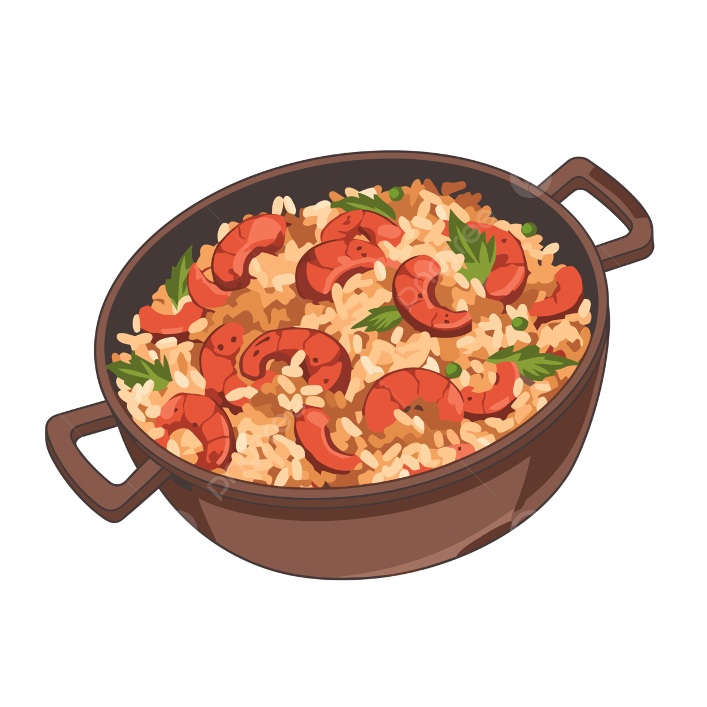

Home
Jambalaya

Description
Jambalaya is a savory rice dish consisting mainly of meat and/or seafood, and vegetables mixed with rice and spices.
Ingredients
- Chicken
- Spicy sausage/chorizo
- Onion
- Pepper
- Garlic cloves
- Tomato paste
- Dried rice
- Chicken stock
- Oil
- Red spices
Steps
-
Season your chicken with the red spices and set it aside.
Let it marinate for at least 30mins.
-
Start by heating a large Dutch oven over medium heat.
Add some oil to the pot and cook the chopped sausages until browned.
Transfer the sausages to a bowl and set aside.
-
Sear the seasoned chicken in the sausage fat until golden brown on both sides.
The chicken does not need to be cooked through at this stage.
Once seared, transfer the chicken into the same bowl as the sausages.
-
Add a little more oil to the pot, before adding the diced onion, pepper, and garlic.
Cook the vegetables until translucent, then add the tomato paste.
Let this cook for a few minutes to allow the tomato paste to develop its flavour.
-
Return the meat to the pot, along with the dried rice.
Stir until the rice has been coloured with the different flavours.
-
Add the chicken stock and bring to a boil.
Once bubbling, reduce the heat to low and simmer gently until the rice is fully cooked.